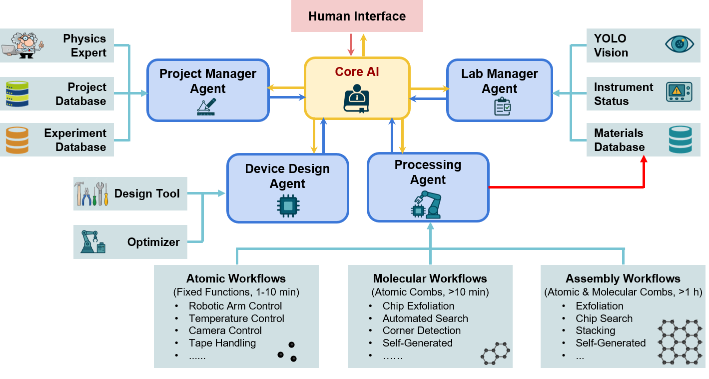
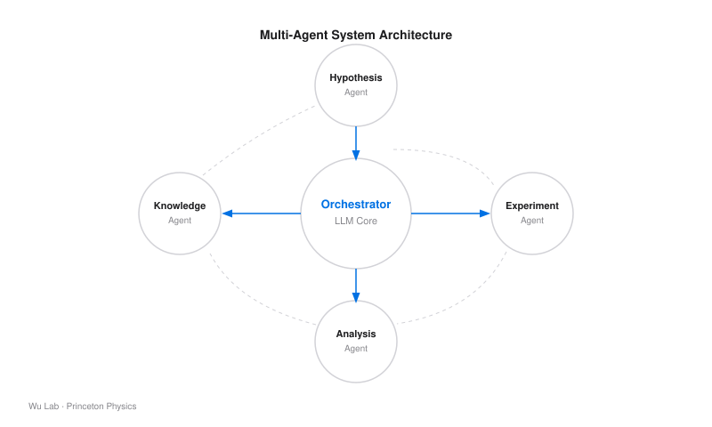
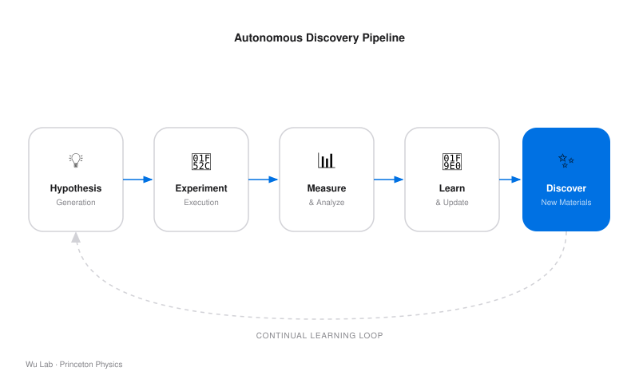

Results
Experimental Findings

Figure 1
Laboratory Hardware Setup
The physical instrumentation platform enabling automated sample preparation and characterization.

Figure 2
2D Quantum Material Sample
Representative data from an autonomously identified 2D quantum material candidate.

Figure 3
Multi-Agent System Architecture
Hierarchical agent structure coordinating hypothesis generation, experimentation, and learning loops.

Figure 4
Autonomous Discovery Pipeline
End-to-end workflow from initial material hypothesis through experimental validation and knowledge integration.